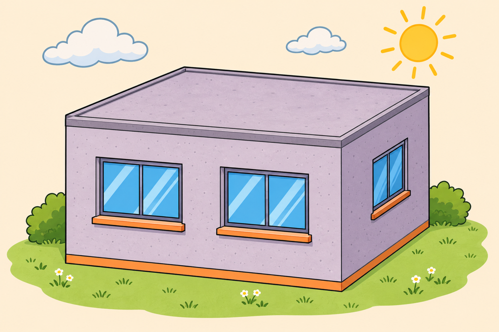

Ein Material, zwei Würfel
Beide Betonwürfel haben 1 m³ Innenraum. Das gewählte Material dämmt sie von allen Seiten. Sonne fällt durch ein 0,5 m² großes Fenster.
Wie bleibt dein Haus im Sommer kühl und im Winter warm?
Beide Betonwürfel haben 1 m³ Innenraum. Das gewählte Material dämmt sie von allen Seiten. Sonne fällt durch ein 0,5 m² großes Fenster.
Start innen 20 °C · draußen 35 °C
Start innen 20 °C · draußen −15 °C
Gestrichelt: derselbe Würfel ohne zusätzliche Dämmung. Teste auch mit Schatten: Was ändert sich im Sommer?

10 m breit · 7 m tief · 5 m hoch
Fenster: Süden 8 m² · Osten und Westen je 4 m²
Klicke auf die Fenster, um die Rollläden zu öffnen oder zu schließen.
Außenfläche · Beton
Ziehe Material in die Box oder tippe es an. Maximal 3 Schichten und zusammen 30 cm.
Material hier ablegen
Das Haus hat 20 cm dicke Betonwände. Dach, Boden, Fenster und Lüftung bleiben bei allen Entwürfen gleich. Sonnenlicht erwärmt Wände, Dach und Innenraum. Geschlossene Rollläden halten direkte Sonne vor dem Fenster ab. Die Dämmung wirkt nur an den Betonfassaden. Die Wetterkurven und Wärmeleitwerte sind Modellwerte.
Richtwerte für Dämmstoffe (PDF) · Aerogel-Dämmplatte · Ziegelmauerwerk (PDF)